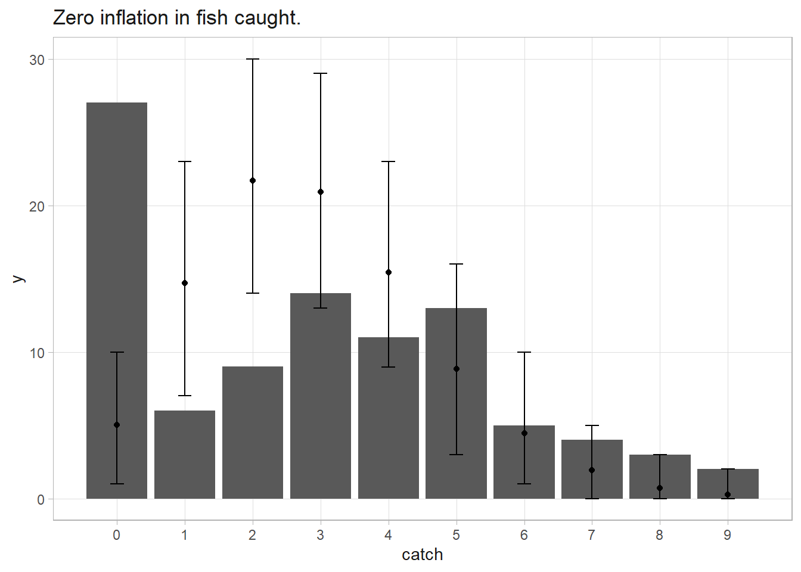

3.10 Metropolis-Hastings
For any model with likelihood \(f(y|\theta)\) and prior \(f(\theta)\), you can use the Metropolis-Hastings step to estimate \(\theta\). Start with an initial \(\theta = \theta_0\). Propose a new \(\theta^'\) from a proposed distribution \(q(\theta'|\theta)\) and evaluate the acceptance ratio,
\[ R = \frac{f(y|\theta')f(\theta')}{f(y|\theta)f(\theta)} \frac{q(\theta|\theta')}{q(\theta'|\theta)} \]
Accept the new value with probability \(\min(R, 1)\), then repeat until convergence. Notice that if the proposed distribution is symmetric, then the second term drops out and \(R\) is just the ratio of posterior distributions. The symmetric version is called Metrolopolis instead of Metropolis-Hastings.
If \(\theta \in \mathbb{R}\) then the normal is a good proposal distribution, \(\theta'|\theta \sim N(\theta, \delta^{-2})\). The normal distribution is symmetric, so the Metropolis acceptance ratio will work.
Suppose you have a normal data generating process with unknown mean \(\mu\) and precision \(\tau\). Your conjugate priors are \(y_i \sim N(\mu, \tau)\), \(\mu \sim N(\mu_0, \tau_0)\), and \(\tau \sim \text{Gamma}(a, b)\). The conditional distributions are those in Eqns (3.2) and (3.3).
\[ \begin{align} \mu|y & \sim N\left(\frac{n\tau\bar{y} + \tau_0\mu_0}{n\tau + \tau_0}, n\tau + \tau_0 \right) \\ \tau|y & \sim \text{Gamma}\left(a + n/2, b + \frac{1}{2} \sum_i(y_i - \mu)^2 \right) \end{align} \]
Let’s replace the Gibbs step for \(\mu\) with the Metropolis step. Propose a new value \(\mu^*\) from the normal distribution centered around the current \(\mu\), \(\mu' \sim N(\mu, \delta^{-2})\) and evaluate the acceptance ratio as
\[ R = \frac{f(y|\mu', \tau) f(\mu'|\mu_0, \tau_0)}{f(y|\mu, \tau) f(\mu|\mu_0, \tau_0)} \]
accepting the new value with probability \(\min (R, 1)\).
Suppose your data is \(n = 100\) values from a \(N(\mu = 2, \tau = 1/4)\) distribution.
set.seed(123)
n <- 100
y <- rnorm(n, 2, 2)
# Use vague priors
mu_0 <- 0
tau_0 <- 10^(-4)
a <- .01
b <- .01
# Here we go: Metropolis for mu, Gibbs for tau
ITER <- 10^3
# monitors
mon_mu <- numeric(ITER)
mon_tau <- numeric(ITER)
# initialize the algorithm
mu <- mean(y)
tau <- 1 / var(y)
# width of proposal distribution for mu
delta <- .01
for(i in 1:ITER) {
# Mu step.
mu_new <- rnorm(1, mu, sd = delta)
# log of the acceptance ratio
logR <- sum(dnorm(y, mu_new, 1/sqrt(tau), log = T)) - # new likelihood
sum(dnorm(y, mu , 1/sqrt(tau), log = T)) + # old likelihood
dnorm(mu_new,mu_0, 1/sqrt(tau_0), log = T) - # new prior
dnorm(mu ,mu_0, 1/sqrt(tau_0), log = T) # old prior
# accept with probability min(R,1)
# draw U from uniform(0,1) and accept if logU < logR
# Note: larger delta results in algorithm proposes candidates outside the main
# support of the posterior and acceptance rate will be low.
logU <- log(runif(1,0,1))
if(logU < logR){mu <- mu_new}
#### STEP for TAU
tau <- rgamma(1, a + n / 2, b + .5 * sum((y - mu)^2))
#### UPDATING THE MONITORS:
mon_mu[i] <- mu
mon_tau[i] <- tau
}
# Note that if you set delta to .01, there was a lot of autocorrelation in mu
# and it did not converge. But if you set it to .1 it does a little better.
tibble(mon_mu, x = 1:ITER) %>% ggplot(aes(x = x, y = mon_mu)) + geom_point()
Suppose a study estimates the sex-ratio of bird chicks. From prior studies, you settle on a beta prior \(p \sim \text{Beta}(20, 20)\) that a chick is female. From a batch of eggs, 5 are male and 1 is female. The number of expected females is \(x|p \sim \text{Bin}(n, p)\). Using the simple beta-binomial model, the posterior mean for \(p = \frac{(a + y)}{(a+y) + (b + (n - y))} = .456\).
## [1] 0.4565217In this case, the \(n\) is also uncertain since some eggs may have been lost. From prior studies you expect \(n \sim \text{Pois}(12)\). Use MCMC to estimate posterior distributions of \(p\) and \(n\).
set.seed(12345)
# Data: 5 males and 1 female
y <- 1
n <- 6
# Prior distributions: beta(20, 20) for p; derived for n.
a <- 20
b <- 20
lambda <- 12
# MCMC algorithm
ITER <- 10^3
p_monitor <- numeric(ITER)
n_monitor <- numeric(ITER)
for(i in 1:ITER) {
# Sample p.
p <- rbeta(1, a + y, b + (n - y))
# Sample n
n_vals <- 6:25
# This distribution was derived for me.
n_prob <- (lambda * (1 - p))^n_vals / (factorial(n_vals - 1))
n <- sample(n_vals, size = 1, replace = TRUE, n_prob)
# Update priors
p_monitor[i] <- p
n_monitor[i] <- n
}
# Drop the first 500 observations as burn-in.
# Posterior mean for n
table(n_monitor[501:ITER]) %>% which.max()
## 8
## 3
max(table(n_monitor[501:ITER])) / (ITER-501)
## [1] 0.1923848
# Posterior mean for p
mean(p_monitor)
## [1] 0.4349155
# Check for convergence.
# p
p1 <- tibble(index = 1:ITER, p = p_monitor) %>% ggplot(aes(x = index, y = p)) + geom_line()
p2 <- tibble(p = p_monitor) %>% ggplot(aes(x = p)) + geom_density()
# n
p3 <- tibble(index = 1:ITER, n = n_monitor) %>% ggplot(aes(x = index, y = n)) + geom_line()
p4 <- tibble(p = n_monitor) %>% ggplot(aes(x = p)) + geom_histogram(binwidth = 1)
(p1+p2)/(p3+p4)